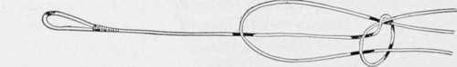

Section II. Lines: Gut, Hair, Silk, Gimp, Etc
Description
This section is from the book "American Game Fishes", by W. A. Perry. Also available from Amazon: American Game Fishes: Their Habits, Habitat, and Peculiarities; How, When, and Where to Angle for Them.
Section II. Lines: Gut, Hair, Silk, Gimp, Etc
The next consideration obviously is the materials in connection with which the knots given are used. The first of these, and perhaps the most important, is gut. This material is a transparent thread, of o;ie fiber, apparently (though really many are massed together), and derives its name from the fact that it is taken from the viscera of the silk-worm (bombyx mori). Its length varies from twenty-three inches (and even longer) to six inches; and its gauge or thickness is from that of a thick carpet-needle to that of a fine human hair. This latter is not often produced naturally, but is got by a process termed "drawing"-through fine holes in steel plates-in a way similar to the drawing of wire. Attempts have been made, in this country, to obtain longer and thicker as well as strong gut from the native silk-worm (attacus cecropia), but they have failed - the gut being very brittle, though of good appearance, and in some instances, three yards in the length of a single strand.
The process of gut-production, as practiced by the peasants of Murcia (Spain), from which cholera-tainted town almost all the gut in use is imported, is described by Mr. S. Allcock, the largest gut-factor in the world, as follows:
"Worms are bred by the country people in their cottages or houses, which usually consist of two rooms on one floor. The roofs of the houses being nearly flat, no fire-place in the houses, the cooking is done outside in the yard. The windows are simply iron cross-bars without glass in the sleeping room. They tie together bamboo cane reeds (which grow plentifully there) with string, forming a bed from twelve to fifteen feet long by four feet wide, raised from the floor about four feet high. The worms are spread all over these beds formed of cane, and are fed five times daily by covering them with mulberry leaves. Before feeding, all the dead and sickly worms are picked out, so that the others are kept in a healthy state. The worm lives about fifty days, during which time they sleep three days at a time, in all twelve days. When they are ready to spin into the cocoon they creep upon branches of small trees cut out of the gardens, which are placed over the worms. They are taken off, put into vinegar, where they remain for six hours, then put into water. Some of the country people make a special business of this, and purchase the worms from others, and employ girls to draw out the gut, which is done by taking off the head and taking hold of the entrails by the thumb and linger and pulling them out as long as they will come, then placing the gut in clear water again. When a sufficient quantity of two or three thousand are made, it is tied in bunches, and hung up to dry in the yard or garden. Some worms produce one gut, some two, and a few three guts. It is afterward sold by the pound-weight of rolls to the gut-makers. The gut-makers boil the gut with soap and a little soda, when the outer skin or film comes off easily. It is then washed, bleached and hung up in rooms. Then girls are employed who place each gut between their teeth, holding the other end with their fingers, and rub it with wash leather. It is then sorted-the strength, lengths, and quality-re-rubbed and tied in bundles of 100, then in 1,000 each, for sale."
This graphic description was written by Mr. Allcock on the spot, and I need not remind my readers that he had unrivaled opportunities of knowing, having a factory there, and preparing, as he does, all the gut he imports so vastly.
Good gut is of course expensive, but it is by far the cheapest, in the end. The characteristics of good gut are as follows: Length-the longer the better [cceteris paribus) - thickness (for Salmon gut), and strength. The best Salmon gut I ever saw was over twenty inches long, very thick, and sustained a dead weight of twelve pounds. This, however, was worth more than its weight in gold.
Good gut, when bent, should not form a permanent right-angle, showing what medical science terms a "green stick fracture." It should be round also. This is easily determined by taking it between the finger and thumb of each hand and twisting it in contrary directions. Of course if the fiber is flat it will look like a long miniature screw, because of the angular twist. Gut that is old, or has been exposed to the sunlight, becomes brittle, and will break like a carrot. Refuse this always.
To keep good gut in a fine state of preservation-and really good gut is worth keeping-the following is a capital formula: take chromic acid, one part; water, five parts; dissolve the chromic acid. Of this solution take one ounce, and mix with five parts glycerine. Steep the gut ten days; at the end of that time submerge the gut and keep it entirely in one part carbolic acid and five parts glycerine. This is unequaled as a preparation of gut for tying, and as a preservative afterward.
Of course when one is not preparing to tie leaders for Salmon, such elaborate precautions are not necessary. For Bass and Trout (brook and the Von Behr species) the ordinary thicknesses in use are suitable. Before tying this together it should be soaked in water of about 80 degrees Fah. for an hour or two. Each knot should be drawn tight with a pair of tweezers; and the leader, for the sake of appearance chiefly, may be stretched on a long board by means of brass pins, till dry. The length of leaders varies from one yard to three-the latter is the general length for Trout-fishing. Besides the two end-loops, two others should be tied in the junctions for the admission of the snells of two dropper-flies. The proper distance of the first from the terminal loop should not be less than twenty inches, and the second should be two feet from the first.
In the tying of snells it is frequently advisable to reinforce that part nearest the hook, because the teeth of the fish frequently fray it disastrously. I have found nothing superior to the device shown in fig. 8. Of course the knotting there shown is drawn snug and tight, and the result is three strands nearest the fish's teeth. If two be preferred, a long loop is simply tied and cut through at its apex, leaving the two strands to be joined to the hook.
Fig. 8.
Horse-hair is seldom used for leaders nowadays, for the reason that it is not strong enough. It is exceedingly rare to find hair capable of lifting more than two pounds. If fine gut be scarce, however, the resourceful angler will not disdain a few hairs from the "gray palfrey's tail." The hair of a stallion is preferable to that of a mare or gelding.
Silk, in its manufactured state of course, forms the staple of reel-lines. These are commonly braided by a machine, sufficiently indicated in fig. 9. The various grades and gauges most suitable for each fish will be given when the tackle for them is considered, and therefore it would be a work of supererogation to recite them here. The dressings of the lines most in use, also, will be given under the appropriate heading. Gimp is extremely useful on which to mount gangs, spoons, etc., for the more voracious fish, such as Pickerel, Pike, Mascalonge, etc. The difficulty in procuring good gimp is rather considerable, if it be bought from the ordinary retailers. There is much adulteration going on, and the core of the gimp, which should be pure silk, is too often nothing but a mixture of silk and cotton. The best plan I know of is to buy banjo strings; these are splendidly strong, and though more expensive, are incomparably more satisfactory than the ordinary silvered gimp. If the silver brightness is too ostensible, it may be turned to a dark neutral color by the use of the following solution: bichloride platinum, one part; water, ten parts-or sulphide of potassium, one part; water, ten parts, will do as well.
A splendid substitute for fine gimp is a banjo string with core of fine steel wire covered with silvered wire. It makes the best kind of trace for Pickerel or Mascalonge.
Continue to:
- prev: Section I. Knots And Ties
- Table of Contents
- next: Section III. Waxes, Varnishes, Line-Dressings And Stains